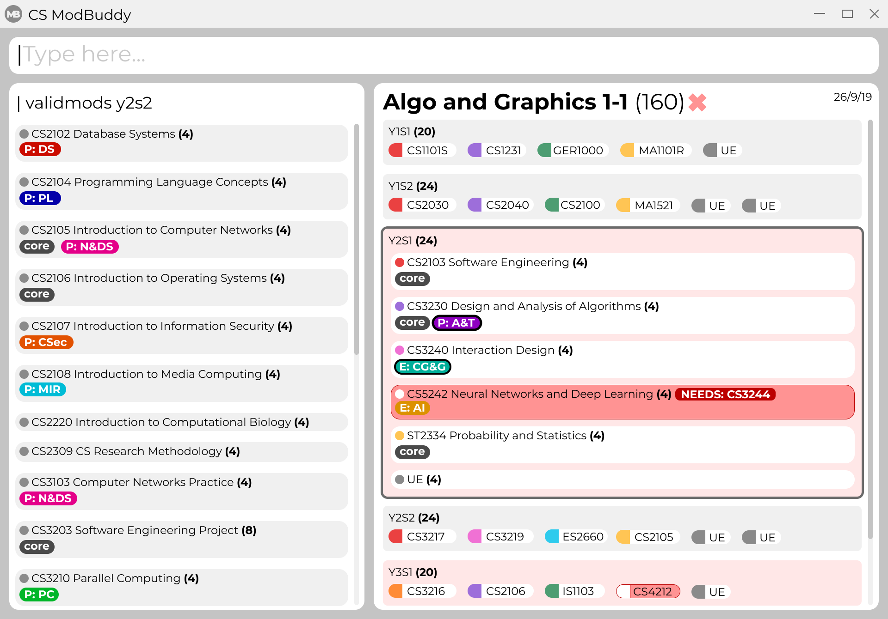

1. Introduction
CS ModBuddy is for those who prefer to use a desktop app for planning their modules. More importantly, CS ModBuddy is optimized for those who prefer to work with a Command Line Interface (CLI) while still having the benefits of a Graphical User Interface (GUI). If you can type fast, CS ModBuddy can get your module planning done faster than traditional GUI apps. Interested? Jump to the Section 2, “Quick Start” to get started. Enjoy!
2. Quick Start
-
Ensure you have Java
11or above installed in your Computer. -
Download the latest
csModBuddy.jarhere. -
Copy the file to the folder you want to use as the home folder for your module plan.
-
Double-click the file to start the app. The GUI should appear in a few seconds.
 -
Type the command in the command box and press Enter to execute it.
e.g. typinghelpand pressing Enter will open the help window. -
Refer to Section 3, “Features” for details of each command.
3. Features
Command Format
-
Words in
UPPER_CASEare the parameters to be supplied by the user e.g. inadd SEMESTER MODULE_CODE,SEMESTERis a parameter which can be used asadd y1s1 cs1101s. -
Items in square brackets are optional e.g
newplan [TITLE]can be used asnewplanor asnewplan Algo and Graphics. -
Items with … after them can be used multiple times e.g.
TAG_NAME…can be used ascore,core completed, etc.
3.1. Storage
3.1.1. Creating a new study plan: newplan
Creates a new study plan with an optional title.
Format: newplan [TITLE]
Examples:
-
newplan -
newplan noc half year -
newplan minor in maths
3.1.2. Deleting a study plan: removeplan
Deletes a study plan with a given index.
Format: removeplan PLAN_NUMBER
Example:
-
removeplan 4
3.1.3. Commiting edits to a study plan: commit
Saves changes to a study plan with a short commit message
Format: commit SHORT_MESSAGE
Examples:
-
commit planned until y2s2 -
commit haven’t added UEs
3.1.4. Checking commit history: history
Shows all commit history of the current study plan.
Format: history
3.1.5. Viewing a commit: viewcommit
Shows the version of the current study plan for a particular commit.This does not discard the commits after the
specified commit.
Format: viewcommit COMMIT_NUMBER
Example:
-
viewcommit 1.1 -
This allows the user to view commit 1 of study plan 1.
3.1.6. Reverting to a commit: revert
Reverts to the version of the current study plan for a particular commit. This creates a new "revert" commit and
returns the current active study plan back to the state in the specified commit.
Format: revert COMMIT_NUMBER
Example:
-
revert 1.1
Suppose there are commits1.0,1.1,1.2, and1.3. This allows the user to revert to commit 1 of study plan 1, creating a new commit called1.4: Revert "COMMIT_MESSAGE_OF_1.1".
3.1.7. Deleting a commit: deletecommit
Deletes a commit in the current active study plan specified by the commit number.
Format: deletecommit COMMIT_NUMBER
Example:
-
deletecommit 2.2
3.1.8. Viewing another study plan: viewplan
Shows the study plan with a given index.
Format: viewplan PLAN_NUMBER
Example:
-
viewplan 3
This allows the user to view the study plan with an index of 3.
3.1.9. Setting another study plan as active: activate
Replaces the current study plan with the specified study plan as the active one.
Format: activate PLAN_NUMBER
Example:
-
activate 2
3.1.10. Moving a semester to a study plan: move
Moves a semester of modules to another study plan with a specified index.
This is the same command as 3.4 (move MODULE SEM_SRC SEM_DEST). The parser will handle the different
command interpretation.
|
Format: move SEMESTER SOURCE_PLAN DESTINATION_PLAN
Examples:
-
move y2s2 1 3 -
move y3s1 2 1
3.1.11. Deleting a semester from a study plan: remove
Deletes a semester of modules in the current active study plan, after which the semester will contain no modules.
This is the same command as 3.2 (remove SEMESTER MODULE). The parser will handle the different command
interpretation.
|
Format: remove SEMESTER
Example:
-
remove y2s2
3.1.12. Viewing description of a module: description
Shows the description of a particular module, including its prerequisites.
Format: description MODULE_CODE
Example:
-
description CS2103T
3.1.13. Editing the title of current study plan: title
Changes the title of the current active study plan.
Format: title PLAN_TITLE
Example:
-
title Algo and Graphics
3.1.14. Setting default study plan: default
Generates a study plan with pre-populated modules according to the recommended study plan for a year one student.
Format: default
3.1.15. Listing all study plans: list
Lists all the study plans that the user has created and has not deleted.
Format: list
3.2. Help and handling the GUI
3.2.1. General Help: help
Provides a list of possible commands the user can type.
Format: help
3.2.2. Help for a specific command: help
Provides help for a specific command.
Format: help COMMAND
Example:
-
help newplan
3.2.3. Autocompleting: tab
Autocompletes command/module code if there is only one option left.
Shows a dropdown for selection if there is more than one option left. This is done through the tab key.
3.2.4. Expanding a semester: expand
Expands a semester so that more details can be seen.
Format: expand SEMESTER
Example:
-
expand y1s1
3.2.5. Collapsing a semester: collapse
Collapses a semester so that most details are hidden.
Format: collapse SEMESTER
Example:
-
collapse y1s1
3.3. Command Line Interface
3.3.1. Assigning a module to a given semester: addmodule
Assigns the specified module to a given semester of the current study plan.
Format: add SEMESTER MODULE …
Examples:
-
add y1s1 CS1101s -
add y2s2 CS3244 CS3245 CS3233 -
add y1s1 ue -
add y1s2 ue:GER1000
3.3.2. Removing a module from a given semester. remove
Removes the specified module to a given semester of the current study plan.
Format: remove SEMESTER MODULE …
Examples:
-
remove y1s1 CS1101S -
remove y2s2 CS3244
3.3.3. Naming a UE from a semester. nameue
Names a UE from the given semester with the given module name. This feature is purely for aesthetic purposes and has no functional implications.
Format: nameue SEMESTER NAME
Examples:
-
nameue y1s1 GER1000
3.3.4. Moving a module from one semester to another. move
Moves a given module from a source semester to a destination semester, as specified.
Format: move MODULE SEMESTER_SRC SEMESTER_DEST
Examples:
-
move CS3243 y2s1 y2s2
3.3.5. Setting the current semester. setcurrent
Sets the given semester as the current one. Semesters before the specified semester will be locked and therefore modules cannot be added or removed from them.
Format: setcurrent SEMESTER
Examples:
-
setcurrent y1s2
3.3.6. Blocking off the given semester: block
Block off the given semester, for reasons such as exchange, LOA, etc.
Format: block SEMESTER [REASON]
3.3.7. Undo-ing the previous command: undo
Undo the previous command. The state of the application will revert back to that before the previous command. This command cannot undo itself.
Format: undo
3.3.8. Redo-ing the previous undone command: redo
Redo the previous undone command. The state of the application will revert back to that before the undo. This command cannot redo itself.
Format: redo
3.3.9. Declaring a focus area: declarefocusarea
Declares the given focus area as one of the focus areas of the study plan. This means that the requirements of the focus area has to be met to be eligible for graduation.
Format: declarefocusarea FOCUS_AREA
3.3.10. Chaining commands
Chain commands together for greater efficiency. The commands, if different, are separated by a ‘&&’. ‘&&’ is not needed if the command is the same.
Format: COMMAND_1 && COMMAND_2 && …
Examples:
-
addmodule y1s1 CS1101S CS1231 MA1521 -
movemodule CS2105 y2s1 y2s2 && addmodule CS2106 y2s2
3.4. Data classification and management
3.4.1. Viewing default tags : viewdefaulttags
Shows all default tag types.
Format: viewdefaulttags
3.4.2. Viewing all tags : viewalltags
Shows all tag types.
Format: viewalltags
3.4.3. Renaming an existing tag : renametag
Renames a tag.
Format: renametag ORIGINAL_TAG_NAME NEW_TAG_NAME
| Only user-created tags can be renamed, i.e. default tag cannot be renamed. |
Example:
-
renametag exchange sep
Renames the tag name from exchange to sep.
3.4.4. Tagging modules : addtag
Attaches a tag to a module.
Format: tag MODULE_CODE TAG_NAME
If a tag with the given TAG_NAME does not exist, a new tag will automatically be created and tagged to the specified module.
|
Example:
-
tag cs3230 exchange
Attaches the tag with name exchange to CS3230.
3.4.5. Removing a tag from a module: removetag
Removes a tag from a module.
Format: removetag MODULE_CODE TAG_NAME
Example:
-
removetag cs3230 exchange
3.4.6. Removing a tag from all modules: removeall
Removes a tag from all modules that it is attached to.
Format: removeall TAG_NAME
Example:
-
removeall exchange
3.4.7. Deleting tags: deletetag
Deletes a tag completely and removes it from any module that it is attached to.
Format: deletetag TAG_NAME
| Only user-created tags can be deleted, i.e. default tag cannot be deleted. |
Example:
-
deletetag exchange
3.4.8. Viewing modules with specific tags : viewtagged
Shows all modules attached to all the specified tags.
Format: viewtagged TAG_NAME …
Examples:
-
viewtagged completed
Shows all modules that are tagged as completed. -
viewtagged core completed
Shows all modules that are tagged as core and completed.
3.4.9. Viewing tags for a specific module : viewtags
Shows all tags attached to the specified module.
Format viewtags MODULE_CODE
Examples:
-
viewtags cs2030
3.4.10. Removing all tags from the study plan : removealltags
Removes all user-created tags in the entire study plan.
Format removealltags
3.4.11. Finding modules using the module code : findmod
Shows which semester the specified module is located at.
Format: findmod MODULE_CODE
Examples:
-
findmod cs1101s -
findmod cs2103
3.4.12. Finding module code using keywords : getmodcode
Shows module codes of all modules with names that contain the specified keywords.
Format: getmodcode KEYWORDS
Examples:
-
getmodcode algorithms -
getmodcode programming
3.4.13. Viewing modules that can be taken in a given semester : validmods
Shows all the modules that can be taken in a given semester based on whether prerequisites have been met.
Format: validmods SEMESTER
Example:
-
validmods y2s1
3.5. Verification
3.5.1. Error messages
Displays a useful error message if the input is invalid. For example, it should highlight wrong commands, wrong numbers of arguments, or arguments in the wrong format.
3.5.2. Checking a study plan’s feasibility
Shows details about what requirements are left to be fulfilled,
such as modules that remain to be taken or prerequisites that have yet to be satisfied.
Format: check [AREA]
Examples:
-
check— checks all graduation requirements by default -
check core— checks only core modules -
check focus— checks only the declared focus area
3.5.3. Viewing modules that can be taken in a given semester : validmods
Shows all the modules that can be taken in a given semester based on whether prerequisites have been met.
Format: validmods SEMESTER
Example:
-
validmods y2s1
3.5.4. Displays
Highlights a module in red if it doesn’t satisfy any of its prerequisites, displaying these required modules as tags.
The study plan will have a tick or cross beside it, which shows if the entire plan is feasible.